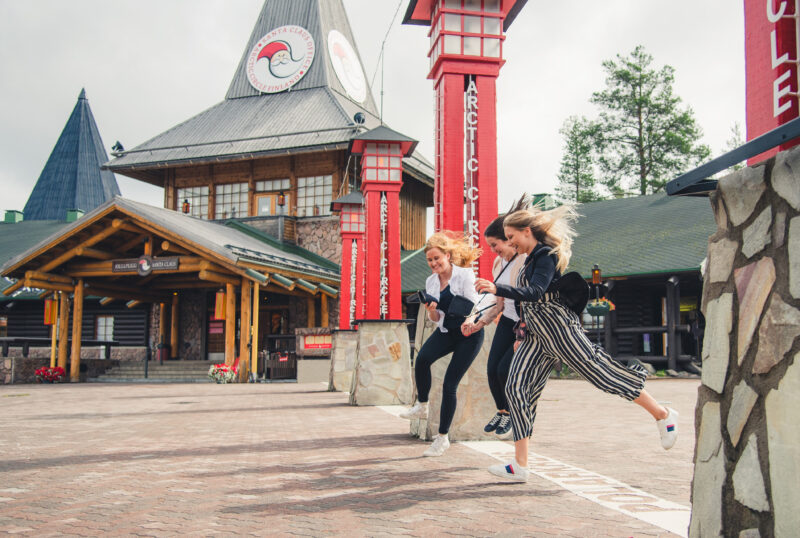

Finland: Rovaniemi
Lapland, the northernmost region of Finland, has become synonymous with Christmas and Santa Claus. The town of Rovaniemi is known as the "Official Hometown of Santa Claus," and visitors to the charming Santa Claus Village can meet St. Nick himself, visit the post office, go to elf school at SantaPark, and more. This winter wonderland also offers plenty of outdoor adventure and awe-inspiring sights, such as taking a reindeer-drawn sleigh ride or sleeping beneath the Northern Lights in an igloo.
500 000 Annual Visitors in Santa Claus Village
Rovaniemi is the Official Hometown of Santa Claus, and the city’s most famous resident can be visited all year round in Santa Claus Village. The village is situated right on the Arctic Circle, just minutes away from Rovaniemi centre. Santa Claus Village is a must see attraction that draws more than 500 000 annual visitors from all around the world.
Santa Claus Village is full of original Christmas charm, for example the Santa Claus Main Post Office. It’s also the home of reindeer and huskies and other lovely creatures.
Wake up your Christmas spirit
A leisurely stroll through the beautifully lit and decorated Santa Claus Village square while Christmas carols are playing, will surely bring a smile to your face and guarantee that the Christmas spirit will take over. Wander through the alleys to look and admire, stop at the restaurants and cafes serving local delicacies or stop by the boutiques to admire Finnish design and handicrafts. For all lovers of the Christmas magic, a visit to Santa Claus Village is a dream come true.

4 free attractions
- Cross the Arctic Circle. The Arctic Circle line is clearly marked in the central square.
- Santa Claus welcomes visitors every day. You can visit Santa Claus for free.
- Santa Claus’ Main Post Office is an attraction in itself and you can visit there to marvel at, for example, the letters sent to Santa Claus. If you wish, you can send mail to your loved ones with the special stamp which is only available at the Arctic Circle.
- In Santa Claus Village you will also find the historic Roosevelt Cottage. The Roosevelt Cottage was completed on June 11, 1950, and it became the first attraction of Santa Claus Village.